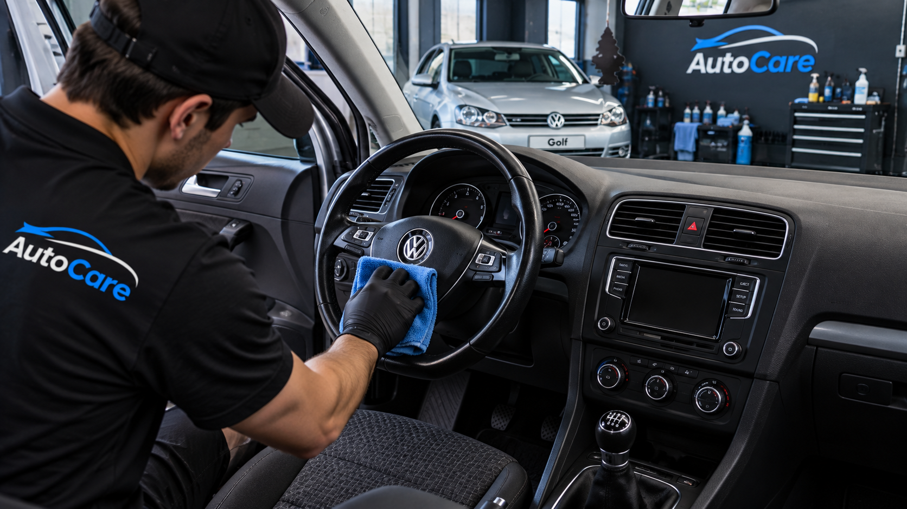

Elementos que deberías llevar en tu vehículo
Prepararse para una situación inesperada puede hacer una gran diferencia.

Al utilizar un vehículo es importante estar preparado para situaciones inesperadas. Llevar algunos elementos básicos puede ser útil durante un viaje o frente a una emergencia.
Kit de emergencia
Mantener un kit de emergencia dentro del vehículo permite tener diferentes elementos organizados y disponibles cuando sean necesarios.
Elementos reflectantes
Si necesitas detener el vehículo, especialmente durante la noche, es importante contar con elementos que permitan advertir tu presencia a otros conductores.
Linterna
Una linterna puede ser útil para revisar el vehículo cuando existe poca iluminación. Es recomendable comprobar periódicamente que se encuentre funcionando.
Revisa tus elementos periódicamente
No basta con guardar los elementos en el vehículo. También es recomendable revisarlos de manera periódica para comprobar que se encuentren disponibles y en condiciones de uso.